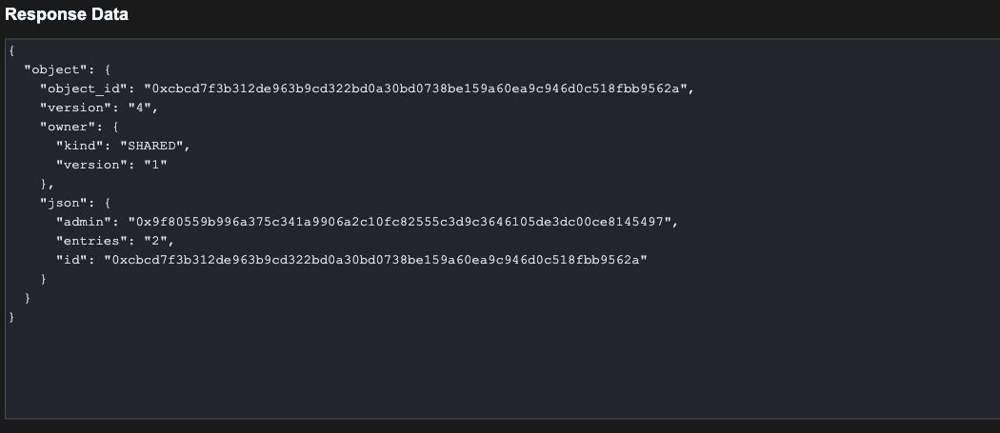
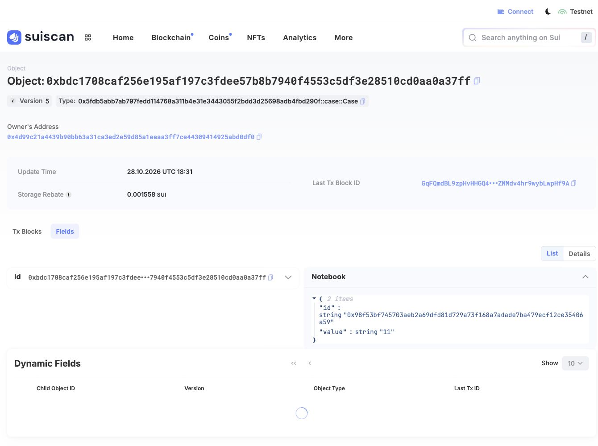
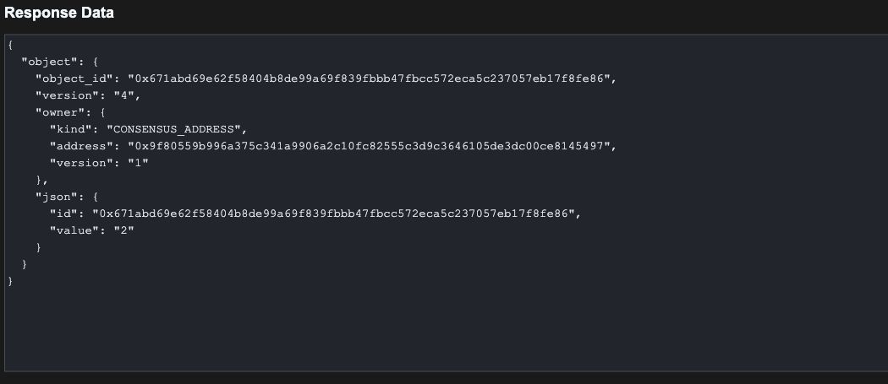

A personal notebook, a public registry, and a permanent set of rules can all be Sui objects. They need different access patterns. One user should control the notebook, several users should contribute to the registry, and everyone should be able to use the rules without changing that particular version of them.
The first article introduced objects and the runtime records around their Move values. We will now use that model to choose an ownership form. Address-owned, shared, immutable, wrapped, and party objects each change how state can enter an operation and which checks the application must provide.
We will build small Move modules, compile them, and run seven local tests. Then we will publish the package once to Sui Testnet, use two fresh accounts to exercise the access rules, and inspect the resulting records with Python through native gRPC. Each example includes a useful restriction as well as a successful operation.
An object read and an object input are different things. A data service can return an address-owned notebook’s public fields to someone who cannot use it in a transaction. Our Python reader will not possess either account’s signing key. The signed CLI calls will use the fresh Testnet accounts created for the experiment.
A Move function asks for a value or a reference such as &Notebook or &mut Notebook. The surrounding ownership state helps determine whether the requested stored object can enter that call. The function can then apply additional rules, such as checking a capability or comparing the sender with an administrator field. A public function and a public object read do not settle all of those questions.
We will compare the five forms listed in the ownership documentation. They are useful teaching categories, but they are not five mutually exclusive values in one owner field. An address-owned case can contain a wrapped notebook. The case has an owner record, while the notebook is nested inside its Move value.
The examples belong to one small application: personal notebooks, a shared registration count, fixed rules, a notebook case, and a service counter. Each needs a different relationship between access and mutation. We will build the source files in that order, then publish the complete package once and compare their behavior on the node.
These commands target macOS on Apple Silicon with Bash or Zsh, Git, curl, and Python 3.13 available. We pin the official Sui testnet-v1.83.0 release. Other platforms need their corresponding official release asset. Compilation and unit tests stay on our computer. The signed transactions later in the article execute on public Testnet using faucet SUI.
Run:
mkdir -p sui-ownership cd sui-ownership mkdir -p .tools/bin .private/network .local/move-cache move/sources client evidence curl -fL https://github.com/MystenLabs/sui/releases/download/testnet-v1.83.0/sui-testnet-v1.83.0-macos-arm64.tgz -o .tools/sui.tgz printf '%s %s\n' 3bdb5300231bc77efc926d8314457cb24e79223c07373a5f3d76b4d8c6025f65 .tools/sui.tgz | shasum -a 256 -c - tar -xzf .tools/sui.tgz -C .tools/bin ./sui export PATH="$PWD/.tools/bin:$PATH" sui --version
Output: Checksum and version lines. Download progress is omitted.
.tools/sui.tgz: OK sui 1.83.0-16d2dc1e05ed
Use a fresh working directory. The following commands create an isolated client configuration and two accounts. Address-generation output includes recovery information, so redirect it into the private directory and print only the addresses. Keep that directory out of source control. All remaining commands run from this project root:
Run:
umask 077
export SUI_CONFIG_DIR="$PWD/.private/network"
export MOVE_HOME="$PWD/.local/move-cache"
export RUST_LOG=off
export SUI_GRPC_ENDPOINT=fullnode.testnet.sui.io:443
printf '[]\n' > "$SUI_CONFIG_DIR/sui.keystore"
cat > "$SUI_CONFIG_DIR/client.yaml" <<EOF
keystore:
File: $SUI_CONFIG_DIR/sui.keystore
envs:
- alias: testnet
rpc: "https://fullnode.testnet.sui.io:443"
ws: null
basic_auth: null
active_env: testnet
active_address: null
EOF
sui client new-address ed25519 alice --json > .private/alice-address.json
sui client new-address ed25519 bob --json > .private/bob-address.json
ALICE=$(python3 -c 'import json;print(json.load(open(".private/alice-address.json"))["address"])')
BOB=$(python3 -c 'import json;print(json.load(open(".private/bob-address.json"))["address"])')
sui client switch --env testnet --address "$ALICE" --json > evidence/selected-network.json
CHAIN_ID=$(sui client chain-identifier --json | python3 -c 'import json,sys;print(json.load(sys.stdin)["base58"])')
printf 'ALICE=%s\nBOB=%s\nCHAIN_ID=%s\n' "$ALICE" "$BOB" "$CHAIN_ID"
Output:
ALICE=0x9f80559b996a375c341a9906a2c10fc82555c3d9c3646105de3dc00ce8145497 BOB=0x4d99c21a4439b90bb63a31ca3ed2e59d85a1eeaa3ff7ce44309414925abd0df0 CHAIN_ID=69WiPg3DAQiwdxfncX6wYQ2siKwAe6L9BZthQea3JNMD
Your generated addresses and all later package IDs, object IDs, transaction digests, and versions will differ. Keep the variables returned by your own run. These captured records use Testnet chain identifier 69WiPg3DAQiwdxfncX6wYQ2siKwAe6L9BZthQea3JNMD.
Fund both accounts through the official Testnet faucet. The pinned CLI solves the faucet’s proof of work. Ensure each account has at least 1 SUI before continuing. These tokens have no real monetary value. The faucet guide describes the public service:
Run:
sui client faucet --address "$ALICE" --url https://faucet.testnet.sui.io > evidence/faucet-alice.txt cat evidence/faucet-alice.txt sui client faucet --address "$BOB" --url https://faucet.testnet.sui.io > evidence/faucet-bob.txt cat evidence/faucet-bob.txt
Output: Payout confirmations. Proof-of-work progress is omitted.
Request successful. The faucet sent 1 SUI to the address balance of 0x9f80559b996a375c341a9906a2c10fc82555c3d9c3646105de3dc00ce8145497 in transaction 7L16J4khwPr1fH6EFj1QQnvbiFfXDmXWqscTyfVp4zga. Request successful. The faucet sent 1 SUI to the address balance of 0x4d99c21a4439b90bb63a31ca3ed2e59d85a1eeaa3ff7ce44309414925abd0df0 in transaction 4eHui9RBXBkqQdWs45TqWaAbjFkkkGEvgj3NywUJyzBd.
The faucet credits an address balance, which does not create a Coin<SUI> object. Our later probes deliberately select concrete gas coins. Materialize a 0.5-SUI coin for each account by redeeming a withdrawal from its address balance. The CLI can pay these setup transactions from the remaining address balance. This keeps gas-input selection explicit without changing the ownership examples. See using address balances.
Run:
sui client ptb --move-call 0x2::coin::redeem_funds '<0x2::sui::SUI>' 'withdrawal(500000000)' --assign coin --transfer-objects '[coin]' "@$ALICE" --sender "@$ALICE" --gas-budget 50000000 --json > evidence/alice-materialize-gas.json sui client ptb --move-call 0x2::coin::redeem_funds '<0x2::sui::SUI>' 'withdrawal(500000000)' --assign coin --transfer-objects '[coin]' "@$BOB" --sender "@$BOB" --gas-budget 50000000 --json > evidence/bob-materialize-gas.json
Each CLI command saves its complete receipt. A small local reader will extract created IDs and print execution status. It reads saved JSON and does not construct or submit transactions:
Let’s create a file named client/receipt.py:
import argparse
import json
from pathlib import Path
parser = argparse.ArgumentParser()
parser.add_argument("receipt")
parser.add_argument("selector", nargs="?", default="status")
parser.add_argument("index", nargs="?", type=int, default=0)
args = parser.parse_args()
data = json.loads(Path(args.receipt).read_text())
if args.selector == "status":
print("Status:", data["effects"]["status"]["status"])
print("Digest:", data["digest"])
elif args.selector == "package":
print(next(x["packageId"] for x in data["objectChanges"] if x["type"] == "published"))
else:
matches = [x["objectId"] for x in data["objectChanges"]
if x["type"] == "created"
and x.get("objectType", "").endswith(args.selector)]
print(matches[args.index])
Run:
python3 client/receipt.py evidence/alice-materialize-gas.json
Output:
Status: success Digest: GDy73tszN3smoGoPWoLxXxhofj81PuwiDs9cS1sYEepb
Run:
python3 client/receipt.py evidence/bob-materialize-gas.json ALICE_GAS=$(python3 client/receipt.py evidence/alice-materialize-gas.json '::coin::Coin<0x2::sui::SUI>') BOB_GAS=$(python3 client/receipt.py evidence/bob-materialize-gas.json '::coin::Coin<0x2::sui::SUI>') printf 'ALICE_GAS=%s\nBOB_GAS=%s\n' "$ALICE_GAS" "$BOB_GAS"
Output:
Status: success Digest: CE9R3UzajKQQDb8Ej9hipcewsUtz3195zvgqModBSLpU ALICE_GAS=0xe5e67319047bef21b0d942e02bc0968fbc7c80cec27686b9acff8da03ff8e202 BOB_GAS=0x411b95bdb6b123426d000122767435bd7de49cd4a89fe05d1d6b6b93a5258a7b
The optional selector is either package or a created object’s type suffix. The last optional integer selects a matching created object when a receipt contains more than one. The default prints status and digest. We will use this helper beside each operation.
Create the package manifest. Testnet is a built-in environment in this CLI, so it needs no custom environment entry:
Run:
cat > move/Move.toml <<EOF [package] name = "sui_ownership" edition = "2024" EOF
The package name supplies its automatic named address. The pinned CLI resolves framework dependencies and fetches sources during the first build if needed. Install the Python reader dependencies through the CLI:
Run:
python3 -m venv .venv
source .venv/bin/activate
python3 -m pip install grpcio==1.84.1 grpcio-reflection==1.84.1 protobuf==7.36.2
python3 -c 'from importlib.metadata import version; print("grpcio:",version("grpcio")); print("grpcio-reflection:",version("grpcio-reflection")); print("protobuf:",version("protobuf"))'
Output: Installed versions used for the Python captures. Package-manager progress is omitted.
grpcio: 1.84.1 grpcio-reflection: 1.84.1 protobuf: 7.36.2
The next five files each include focused unit tests. A test marked expected_failure passes when the specified abort occurs. These tests run locally and check Move behavior. The Testnet experiment separately checks ownership admission and public state. --no-lint suppresses lint messages without disabling those checks.
Choose an address-owned object when one account should supply that state to transactions. A personal notebook, a ticket, and a capability are natural examples. Other people can inspect their public records through a data service, but that observation does not grant access to the existing objects as transaction inputs. See address-owned objects.
Our notebook keeps an integer value. Its separate capability records the notebook ID that it authorizes. The constructor creates two fresh identities and binds the capability to the new notebook. Calling the constructor again produces another pair, rather than a replacement grant for an existing notebook.
The setter requires &mut Notebook and &NotebookCap. For the ordinary account-owned inputs used here, Sui checks that the sender may supply both objects. The function then checks that the capability refers to this notebook. Custody determines which objects can enter the call, while the ID assertion determines which pair permits the update.
create_owned transfers both objects to the transaction sender. The structs contain no owner address field. Their address ownership lives in the surrounding runtime records, which we will inspect after publication.
Let’s create a file named move/sources/owned.move:
module sui_ownership::owned;
const EWrongNotebook: u64 = 0;
public struct Notebook has key, store {
id: UID,
value: u64,
}
public struct NotebookCap has key, store {
id: UID,
notebook: ID,
}
public fun create(value: u64, ctx: &mut TxContext): (Notebook, NotebookCap) {
let note = Notebook { id: object::new(ctx), value };
let cap = NotebookCap { id: object::new(ctx), notebook: object::id(¬e) };
(note, cap)
}
#[allow(lint(self_transfer))]
public fun create_owned(value: u64, ctx: &mut TxContext) {
let (note, cap) = create(value, ctx);
transfer::transfer(note, ctx.sender());
transfer::transfer(cap, ctx.sender());
}
public fun value(note: &Notebook): u64 { note.value }
public fun set_value(note: &mut Notebook, cap: &NotebookCap, value: u64) {
assert!(object::id(note) == cap.notebook, EWrongNotebook);
note.value = value;
}
#[test_only]
public fun destroy_for_testing(note: Notebook, cap: NotebookCap) {
let Notebook { id, value: _ } = note;
object::delete(id);
let NotebookCap { id, notebook: _ } = cap;
object::delete(id);
}
#[test]
fun matching_cap_updates_value() {
let mut ctx = tx_context::dummy();
let (mut note, cap) = create(7, &mut ctx);
set_value(&mut note, &cap, 9);
assert!(value(¬e) == 9, 1);
destroy_for_testing(note, cap);
}
#[test]
#[expected_failure(abort_code = 0, location = sui_ownership::owned)]
fun another_notebooks_cap_is_rejected() {
let mut ctx = tx_context::dummy();
let (mut note, cap) = create(7, &mut ctx);
let (other, other_cap) = create(7, &mut ctx);
set_value(&mut note, &other_cap, 9);
destroy_for_testing(note, cap);
destroy_for_testing(other, other_cap);
}
Run:
sui move test --path move --no-lint owned
Output:
INCLUDING DEPENDENCY MoveStdlib INCLUDING DEPENDENCY Sui BUILDING sui_ownership Running Move unit tests [ PASS ] sui_ownership::owned::another_notebooks_cap_is_rejected [ PASS ] sui_ownership::owned::matching_cap_updates_value Test result: OK. Total tests: 2; passed: 2; failed: 0
The first unit test changes a notebook from 7 to 9 using its matching capability. The second deliberately supplies another notebook’s capability and expects abort code 0. Its passing result means that the expected rejection occurred. These tests exercise the module’s binding rule with locally constructed values. The later node experiment checks actual account ownership.
This design makes the transfer policy visible. Both types have store, so their owners can transfer them separately. The capability guards this setter, and an application that intends a complete update handover must account for both objects. If several accounts instead need ongoing access to one mutable record, a shared object gives us a different starting point.
Choose a shared object when multiple users must interact with the same mutable state without transferring it between them. A registration service needs one count of accepted entries, just as a marketplace needs common state for its participants. Our small registry stores that count so we can isolate access rules from the rest of an application.
create builds a fresh Registry and calls share_object. Any address can then reference it in a transaction. The module exposes add_entry as an operation open to everyone, so both Alice and Bob should be able to increment the count. Shared availability alone does not authorize every operation a module could expose. See shared objects and access control.
The admin field introduces a second rule. It records the creator’s address, and reset compares it with the transaction sender obtained from TxContext. That field is application data, not the object’s runtime owner. The object remains shared when Alice is its administrator.
This distinction lets one object support public contributions and restricted administration. The source must make each operation’s policy explicit. A shared reference allows the call to present the object, while the function determines whether the requested action is permitted.
Let’s create a file named move/sources/registry.move:
module sui_ownership::registry;
const ENotAdmin: u64 = 0;
public struct Registry has key {
id: UID,
entries: u64,
admin: address,
}
public fun create(ctx: &mut TxContext) {
transfer::share_object(Registry {
id: object::new(ctx),
entries: 0,
admin: ctx.sender(),
});
}
public fun add_entry(registry: &mut Registry) {
registry.entries = registry.entries + 1;
}
public fun reset(registry: &mut Registry, ctx: &TxContext) {
assert!(ctx.sender() == registry.admin, ENotAdmin);
registry.entries = 0;
}
public fun entries(registry: &Registry): u64 { registry.entries }
#[test]
fun public_updates_and_admin_reset() {
let mut ctx = tx_context::dummy();
let mut registry = Registry {
id: object::new(&mut ctx), entries: 0, admin: ctx.sender(),
};
add_entry(&mut registry);
add_entry(&mut registry);
assert!(entries(®istry) == 2, 1);
reset(&mut registry, &ctx);
assert!(entries(®istry) == 0, 2);
let Registry { id, entries: _, admin: _ } = registry;
object::delete(id);
}
#[test]
#[expected_failure(abort_code = 0, location = sui_ownership::registry)]
fun another_address_cannot_reset() {
let mut ctx = tx_context::dummy();
let mut registry = Registry {
id: object::new(&mut ctx), entries: 2, admin: @0xA,
};
reset(&mut registry, &ctx);
let Registry { id, entries: _, admin: _ } = registry;
object::delete(id);
}
Run:
sui move test --path move --no-lint registry
Output:
INCLUDING DEPENDENCY MoveStdlib INCLUDING DEPENDENCY Sui BUILDING sui_ownership Running Move unit tests [ PASS ] sui_ownership::registry::another_address_cannot_reset [ PASS ] sui_ownership::registry::public_updates_and_admin_reset Test result: OK. Total tests: 2; passed: 2; failed: 0
The positive unit test adds two entries and lets the matching administrator reset the count to zero. The negative test gives the registry a different administrator and expects abort code 0. Together they exercise the two function policies. They use local values, so we will separately inspect the published shared object and call it from two actual Testnet accounts.
Shared state also creates a common place for conflicting writes. Two transactions modifying this counter must have an ordered result. Sharing does not make those writes independent or mean they execute simultaneously. Use a common shared record when the application needs that relationship. Separate personal records can remain address-owned when there is no reason for every user to update the same object.
Choose an immutable object for reference data that must remain fixed once published, such as a permanent rule set or a particular configuration snapshot. Our Rules object contains a limit. Everyone should be able to supply it as a read-only input, and no account should be able to revise that instance afterward.
freeze_object takes the object by value and makes it immutable. This is a permanent state change: the frozen object cannot subsequently be mutated, transferred, or deleted. Our constructor freezes the freshly created rules immediately. The resulting runtime record has the immutable ownership form, rather than an administrator address. See immutable objects.
An immutable object can enter a Move call as &Rules. It cannot satisfy an argument requiring &mut Rules or a by-value Rules. This is stronger than a function merely choosing to borrow an ordinary mutable object immutably for one call. Freezing constrains every later use of this stored instance.
We include set_limit as a deliberate probe. The function’s source is valid, and it would update a mutable Rules value. After our constructor freezes an instance, the runtime must prevent that instance from being supplied to the mutable parameter. The function’s visibility cannot undo the object’s immutable state.
Let’s create a file named move/sources/rules.move:
module sui_ownership::rules;
public struct Rules has key, store {
id: UID,
limit: u64,
}
public fun create(limit: u64, ctx: &mut TxContext) {
transfer::freeze_object(Rules { id: object::new(ctx), limit });
}
public fun read_limit(rules: &Rules): u64 { rules.limit }
public fun set_limit(rules: &mut Rules, limit: u64) {
rules.limit = limit;
}
#[test]
fun read_then_freeze() {
let mut ctx = tx_context::dummy();
let rules = Rules { id: object::new(&mut ctx), limit: 10 };
assert!(read_limit(&rules) == 10, 0);
transfer::freeze_object(rules);
}
Run:
sui move test --path move --no-lint rules
Output:
INCLUDING DEPENDENCY MoveStdlib INCLUDING DEPENDENCY Sui BUILDING sui_ownership Running Move unit tests [ PASS ] sui_ownership::rules::read_then_freeze Test result: OK. Total tests: 1; passed: 1; failed: 0
The unit test constructs rules with limit 10, checks the read function, and then freezes the value. Its assertion occurs before freezing. It does not test a later account’s access or attempt mutation after freezing. Those behaviors are exercised against the actual node in the publication experiment.
A configuration that must change later needs another design. Creating a new rules object gives it a different identity, and existing transactions or objects referring to the old rules do not automatically switch to the new one. Immutable objects suit applications that deliberately preserve a specific rule set. For mutable common configuration, shared state with an explicit administrator check addresses a different requirement.
A notebook can belong to an account while remaining an independently addressable object. Wrapping changes that relationship. Our Case stores the notebook itself in a field. The case has its own UID, and the notebook keeps its UID inside the case. While wrapped, that notebook is no longer a separate live object that a transaction can supply by ID. Access goes through the case. See wrapped objects.
This fits an application where an item should move or be accessed together with its container. Examples include equipment inside a character, a document inside a case, or an asset held by a request object whose module exposes specific release operations. The wrapper's fields and functions define how the contained value can be reached. Choosing wrapping therefore changes the application's operations as well as its data layout.
We will reuse the notebook from the address-owned experiment. Bob keeps its matching capability separately and puts the notebook into a new case. This lets us test whether the capability's ID binding survives containment. It also gives us a useful distinction to inspect later: the case has an ordinary address owner, but a direct current-object read using the notebook's ID will fail while the notebook is inside it.
Let’s create a file named move/sources/case.move:
module sui_ownership::case;
use sui_ownership::owned::{Self, Notebook, NotebookCap};
public struct Case has key, store {
id: UID,
notebook: Notebook,
}
#[allow(lint(self_transfer))]
public fun pack(notebook: Notebook, ctx: &mut TxContext) {
transfer::transfer(Case { id: object::new(ctx), notebook }, ctx.sender());
}
public fun note_id(case: &Case): ID {
object::id(&case.notebook)
}
public fun set_inside(case: &mut Case, cap: &NotebookCap, value: u64) {
owned::set_value(&mut case.notebook, cap, value);
}
#[allow(lint(self_transfer))]
public fun unpack(case: Case, ctx: &mut TxContext) {
let Case { id, notebook } = case;
object::delete(id);
transfer::public_transfer(notebook, ctx.sender());
}
#[test]
fun wrapped_notebook_keeps_identity() {
let mut ctx = tx_context::dummy();
let (notebook, cap) = owned::create(7, &mut ctx);
let original_id = object::id(¬ebook);
let mut case = Case { id: object::new(&mut ctx), notebook };
assert!(note_id(&case) == original_id, 1);
set_inside(&mut case, &cap, 9);
let Case { id, notebook } = case;
object::delete(id);
assert!(object::id(¬ebook) == original_id, 2);
assert!(owned::value(¬ebook) == 9, 3);
owned::destroy_for_testing(notebook, cap);
}
Run:
sui move test --path move --no-lint case
Output:
INCLUDING DEPENDENCY MoveStdlib INCLUDING DEPENDENCY Sui BUILDING sui_ownership Running Move unit tests [ PASS ] sui_ownership::case::wrapped_notebook_keeps_identity Test result: OK. Total tests: 1; passed: 1; failed: 0
pack takes the notebook by value and places it inside a newly created Case. set_inside obtains a mutable reference to that field and passes it, together with the separately supplied capability, to the original setter. Wrapping does not remove the notebook module's binding check. Bob must be able to supply the case and the capability, and the capability must still identify the contained notebook.
unpack consumes the case, extracts the notebook, deletes the case UID, and transfers the notebook to the sender. The unit test checks the notebook's identity and setter behavior in local Move values.
There is no separate Wrapped runtime owner value to look for in that notebook response. Containment is the reason the notebook lacks its own live record at this stage. Our known pack operation and the case's nested data establish that explanation. A missing response by itself would not establish why an arbitrary object was unavailable.
Keep this distinct from transferring an object to another object's ID. That mechanism uses an object-owned record and receiving operations. Our case uses a nested Move field, and its functions extract or borrow that field directly.
Consider a counter maintained by one service account. Other accounts should not update it, but the service would like to launch another update before an earlier request has completed. A party object provides restricted ownership with consensus-managed version assignment. Its access rule and its input versioning mechanism are separate decisions.
The public API we are using supports a single-owner party. party::single_owner gives that address the permissions, and public_party_transfer places the object in this ownership form. We will create Alice's counter that way. The existence of a permission structure does not make this example a multi-member group. See party objects and current limitations.
The counter deliberately has no separately supplied capability. Its ordinary updates rely on the party owner's authority. Adding an address-owned capability to every call would introduce another input whose state must be coordinated. We want the later experiment to isolate the counter's behavior, so Alice will launch two updates with distinct gas coins and wait for both results afterward.
Let’s create a file named move/sources/party_counter.move:
module sui_ownership::party_counter;
use sui::party;
public struct Counter has key, store {
id: UID,
value: u64,
}
public fun create(ctx: &mut TxContext) {
let counter = Counter { id: object::new(ctx), value: 0 };
transfer::public_party_transfer(counter, party::single_owner(ctx.sender()));
}
public fun increment(counter: &mut Counter) {
counter.value = counter.value + 1;
}
public fun value(counter: &Counter): u64 {
counter.value
}
#[test]
fun repeated_updates_change_value() {
let mut ctx = tx_context::dummy();
let mut counter = Counter { id: object::new(&mut ctx), value: 0 };
increment(&mut counter);
increment(&mut counter);
assert!(value(&counter) == 2, 1);
let Counter { id, value: _ } = counter;
object::delete(id);
}
Run:
sui move test --path move --no-lint party_counter
Output:
INCLUDING DEPENDENCY MoveStdlib INCLUDING DEPENDENCY Sui BUILDING sui_ownership Running Move unit tests [ PASS ] sui_ownership::party_counter::repeated_updates_change_value Test result: OK. Total tests: 1; passed: 1; failed: 0
increment is a public Move function and contains no sender comparison. That does not give Bob access to Alice's counter. Sui still checks whether the sender may supply the party object. Our later Bob attempt is rejected by the Testnet endpoint's input checks, while both of Alice's submitted updates succeed and leave the counter at 2.
The local unit test establishes that two function calls increment the value correctly. It does not test concurrent submission or ownership admission. Those observations come from the separate node experiment. Launching both commands before waiting demonstrates multiple inflight requests. The conflicting counter writes still execute in consensus order, so the successful results do not establish parallel execution of those writes.
All five source files are now present. Publish the package once from Alice’s account:
Run:
sui client publish move --sender "$ALICE" --gas-budget 100000000 --json > evidence/publish.json
Run:
python3 client/receipt.py evidence/publish.json
Output:
Status: success Digest: 9ztdJjZ7mifDspETYXPN8G85jVG9C8Z5EMavEyaqa2MN
The publication transaction and package page expose the deployed modules on public Testnet.
Run:
PACKAGE=$(python3 client/receipt.py evidence/publish.json package) printf 'PACKAGE=%s\n' "$PACKAGE"
Output:
PACKAGE=0x5fdb5abb7ab797fedd114768a311b4e31e3443055f2bdd3d25698adb4fbd290f
The following commands run in order. Intentional failures are identified explicitly, and links point to the public transactions that actually executed.
Run:
sui client call --package "$PACKAGE" --module owned --function create_owned --args 7 --sender "$ALICE" --gas-budget 50000000 --json > evidence/owned-create.json NOTEBOOK=$(python3 client/receipt.py evidence/owned-create.json '::owned::Notebook') CAPABILITY=$(python3 client/receipt.py evidence/owned-create.json '::owned::NotebookCap') printf 'NOTEBOOK=%s\nCAPABILITY=%s\n' "$NOTEBOOK" "$CAPABILITY"
Output:
NOTEBOOK=0x98f53bf745703aeb2a69dfd81d729a73f168a7adade7ba479ecf12ce35406a59 CAPABILITY=0xe87fe80d12e51fcfc3eb573401c77015340d89e951b9a07072677fee559ae2fb
Run:
sui client call --package "$PACKAGE" --module owned --function set_value --args "$NOTEBOOK" "$CAPABILITY" 9 --sender "$ALICE" --gas-budget 50000000 --json > evidence/owned-alice-update.json python3 client/receipt.py evidence/owned-alice-update.json
Output:
Status: success Digest: 4c4RHDFWZUySiCExUErEAN7CFrQyuzXfbeQ4WeFyRfkp
For the state reads, use Sui’s native LedgerService.GetObject. Server reflection supplies the protobuf descriptors from the public Testnet endpoint. The reader saves the complete response and prints the fields we need. It uses TLS for this public endpoint. See gRPC access.
Let’s create a file named client/read_object.py:
import argparse
import json
import os
import sys
from pathlib import Path
import grpc
from google.protobuf import descriptor_pool, json_format, message_factory
from grpc_reflection.v1alpha.proto_reflection_descriptor_database import (
ProtoReflectionDescriptorDatabase,
)
parser = argparse.ArgumentParser()
parser.add_argument("object_id")
parser.add_argument("label")
args = parser.parse_args()
if not args.label.isidentifier():
parser.error("Use a simple label such as owned, shared, or wrapped_child")
endpoint = os.environ.get("SUI_GRPC_ENDPOINT", "fullnode.testnet.sui.io:443")
host = endpoint.rsplit(":", 1)[0]
channel = (
grpc.insecure_channel(endpoint)
if host in {"localhost", "127.0.0.1", "[::1]"}
else grpc.secure_channel(endpoint, grpc.ssl_channel_credentials())
)
service = "sui.rpc.v2.LedgerService"
try:
with channel:
pool = descriptor_pool.DescriptorPool(ProtoReflectionDescriptorDatabase(channel))
method = pool.FindServiceByName(service).methods_by_name["GetObject"]
request_type = message_factory.GetMessageClass(method.input_type)
response_type = message_factory.GetMessageClass(method.output_type)
call = channel.unary_unary(
f"/{service}/GetObject",
request_serializer=request_type.SerializeToString,
response_deserializer=response_type.FromString,
)
response = call(
request_type(object_id=args.object_id, read_mask={"paths": ["*"]}), timeout=30
)
result = json_format.MessageToDict(response, preserving_proto_field_name=True)
except grpc.RpcError as error:
result = {"error": {"code": error.code().name, "details": error.details()}}
Path("evidence").mkdir(exist_ok=True)
path = Path("evidence") / f"{args.label}.json"
path.write_text(json.dumps(result, indent=2) + "\n")
if "error" in result:
print("GetObject failed:", result["error"]["code"], result["error"]["details"])
print("Saved:", path)
sys.exit(1)
obj = result["object"]
print("Object ID:", obj["object_id"])
print("Version:", obj["version"])
print("Type:", obj["object_type"])
print("Owner:", json.dumps(obj["owner"], sort_keys=True))
print("Move value:", json.dumps(obj["json"], indent=2, sort_keys=True))
print("Saved:", path)
Run:
python3 client/read_object.py "$NOTEBOOK" owned_before
Output:
Object ID: 0x98f53bf745703aeb2a69dfd81d729a73f168a7adade7ba479ecf12ce35406a59
Version: 2
Type: 0x5fdb5abb7ab797fedd114768a311b4e31e3443055f2bdd3d25698adb4fbd290f::owned::Notebook
Owner: {"address": "0x9f80559b996a375c341a9906a2c10fc82555c3d9c3646105de3dc00ce8145497", "kind": "ADDRESS"}
Move value: {
"id": "0x98f53bf745703aeb2a69dfd81d729a73f168a7adade7ba479ecf12ce35406a59",
"value": "9"
}
Saved: evidence/owned_before.json
This public read names Alice as owner and shows value 9. The code sends an object ID and read mask, not a signature or a Move reference. Keep the virtual environment active for each later read.
Run:
sui client transfer --to "$BOB" --object-id "$NOTEBOOK" --sender "$ALICE" --gas-budget 50000000 --json > evidence/owned-transfer.json python3 client/receipt.py evidence/owned-transfer.json
Output:
Status: success Digest: Bip94cy5XY9GzbDVwXt21Rs6aPzvQ519GM87E7i2WZPe
We select the materialized gas coins explicitly in the deliberate rejection probes. Alice still has the capability but no longer has the notebook:
Run:
sui client call --package "$PACKAGE" --module owned --function set_value --args "$NOTEBOOK" "$CAPABILITY" 10 --sender "$ALICE" --gas-budget 50000000 --gas "$ALICE_GAS" --json
Output: Expected exit 1. Leading diagnostic, with repeated RPC details omitted.
code: 'Client specified an invalid argument', message: "Error checking transaction input objects: Transaction was not signed by the correct sender: Object 0x98f53bf745703aeb2a69dfd81d729a73f168a7adade7ba479ecf12ce35406a59 is owned by account address 0x4d99c21a4439b90bb63a31ca3ed2e59d85a1eeaa3ff7ce44309414925abd0df0, but given owner/signer address is 0x9f80559b996a375c341a9906a2c10fc82555c3d9c3646105de3dc00ce8145497"
Bob has the notebook but still lacks the capability:
Run:
sui client call --package "$PACKAGE" --module owned --function set_value --args "$NOTEBOOK" "$CAPABILITY" 10 --sender "$BOB" --gas-budget 50000000 --gas "$BOB_GAS" --json
Output: Expected exit 1. Leading diagnostic, with repeated RPC details omitted.
code: 'Client specified an invalid argument', message: "Error checking transaction input objects: Transaction was not signed by the correct sender: Object 0xe87fe80d12e51fcfc3eb573401c77015340d89e951b9a07072677fee559ae2fb is owned by account address 0x9f80559b996a375c341a9906a2c10fc82555c3d9c3646105de3dc00ce8145497, but given owner/signer address is 0x4d99c21a4439b90bb63a31ca3ed2e59d85a1eeaa3ff7ce44309414925abd0df0"
The Testnet endpoint rejects the unavailable input in each attempt before our setter runs. The error names the actual object owner and the supplied sender. In this implementation the owner mismatch uses IncorrectUserSignature, which does not imply malformed cryptography. The address-owner check explains that diagnostic. These input rejections did not produce committed transactions, so they have no failed-transaction explorer link.
Run:
sui client transfer --to "$BOB" --object-id "$CAPABILITY" --sender "$ALICE" --gas-budget 50000000 --json > evidence/cap-transfer.json python3 client/receipt.py evidence/cap-transfer.json sui client call --package "$PACKAGE" --module owned --function set_value --args "$NOTEBOOK" "$CAPABILITY" 11 --sender "$BOB" --gas-budget 50000000 --json > evidence/owned-bob-update.json python3 client/receipt.py evidence/owned-bob-update.json
Output:
Status: success Digest: 7QnRHaRni4swxPs33GQs29ztj1dHtK5PAu7gDEt4Bmde Status: success Digest: EmxXD3avUTMudWwpdKDn7tdfP7ETXcw2QVmrkczAtzhM
Run:
python3 client/read_object.py "$NOTEBOOK" owned
Output:
Object ID: 0x98f53bf745703aeb2a69dfd81d729a73f168a7adade7ba479ecf12ce35406a59
Version: 4
Type: 0x5fdb5abb7ab797fedd114768a311b4e31e3443055f2bdd3d25698adb4fbd290f::owned::Notebook
Owner: {"address": "0x4d99c21a4439b90bb63a31ca3ed2e59d85a1eeaa3ff7ce44309414925abd0df0", "kind": "ADDRESS"}
Move value: {
"id": "0x98f53bf745703aeb2a69dfd81d729a73f168a7adade7ba479ecf12ce35406a59",
"value": "11"
}
Saved: evidence/owned.json
The notebook is now Bob’s value-11 object. Notebook transfer, capability transfer, and Bob’s successful update provide the public handover records. Moving the matching capability supplied the missing input. The capability’s notebook binding and the notebook’s ID stayed unchanged.
Run:
sui client call --package "$PACKAGE" --module registry --function create --sender "$ALICE" --gas-budget 50000000 --json > evidence/registry-create.json REGISTRY=$(python3 client/receipt.py evidence/registry-create.json '::registry::Registry') printf 'REGISTRY=%s\n' "$REGISTRY"
Output:
REGISTRY=0xcbcd7f3b312de963b9cd322bd0a30bd0738be159a60ea9c946d0c518fbb9562a
Run:
sui client call --package "$PACKAGE" --module registry --function add_entry --args "$REGISTRY" --sender "$ALICE" --gas-budget 50000000 --json > evidence/registry-alice-add.json python3 client/receipt.py evidence/registry-alice-add.json sui client call --package "$PACKAGE" --module registry --function add_entry --args "$REGISTRY" --sender "$BOB" --gas-budget 50000000 --json > evidence/registry-bob-add.json python3 client/receipt.py evidence/registry-bob-add.json
Output:
Status: success Digest: BC91Pax5NsVoYTdvPrZAioF9v2ehFodzuTQYgUJ1uNxP Status: success Digest: 9NkcvwHHSnt1A3FDYRwsEqbeZrWSy6aygt7uCMDGi5r4
Run:
sui client call --package "$PACKAGE" --module registry --function reset --args "$REGISTRY" --sender "$BOB" --gas-budget 50000000 --gas "$BOB_GAS" --json
Output: Expected exit 1.
Error executing transaction 'B92H9tammBG3zTXMsAfDsGN1F5KFzw61U61Pa4FC8Bsa': 1st command aborted within function '0x5fdb5abb7ab797fedd114768a311b4e31e3443055f2bdd3d25698adb4fbd290f::registry::reset' at instruction 11 with code 0
Bob can supply the shared registry, so this call reaches reset and aborts at the administrator check. The recorded failed transaction confirms MoveAbort in that function with code 0. It leaves the entry count at 2. Inspect Alice’s addition, Bob’s addition, and the executed reset failure:
Run:
python3 client/read_object.py "$REGISTRY" shared
Output:
Object ID: 0xcbcd7f3b312de963b9cd322bd0a30bd0738be159a60ea9c946d0c518fbb9562a
Version: 4
Type: 0x5fdb5abb7ab797fedd114768a311b4e31e3443055f2bdd3d25698adb4fbd290f::registry::Registry
Owner: {"kind": "SHARED", "version": "1"}
Move value: {
"admin": "0x9f80559b996a375c341a9906a2c10fc82555c3d9c3646105de3dc00ce8145497",
"entries": "2",
"id": "0xcbcd7f3b312de963b9cd322bd0a30bd0738be159a60ea9c946d0c518fbb9562a"
}
Saved: evidence/shared.json
Inspect the shared registry on the Testnet explorer.

Public Testnet evidence for the registry. Its runtime ownership is shared, while the admin address and entry count belong to the Move value.
The top-level version is 4. The owner record’s version 1 identifies when shared access began. Those fields serve different roles. We are comparing access and state, rather than treating every version field as the current object version.
Run:
sui client call --package "$PACKAGE" --module rules --function create --args 10 --sender "$ALICE" --gas-budget 50000000 --json > evidence/rules-create.json RULES=$(python3 client/receipt.py evidence/rules-create.json '::rules::Rules') printf 'RULES=%s\n' "$RULES"
Output:
RULES=0xd1f41a6d82879734fe544e61630e82cf996c4db0f35954af8f4577d46f3c9c62
Run:
sui client call --package "$PACKAGE" --module rules --function read_limit --args "$RULES" --sender "$BOB" --gas-budget 50000000 --json > evidence/rules-bob-read.json python3 client/receipt.py evidence/rules-bob-read.json
Output:
Status: success Digest: A3uwACCX174eivECamMorGxFH2RZnNEmAJqm38CXmkP1
Run:
sui client call --package "$PACKAGE" --module rules --function set_limit --args "$RULES" 20 --sender "$BOB" --gas-budget 50000000 --gas "$BOB_GAS" --json
Output: Expected exit 1.
Error executing transaction 'G4SaV6Td2KNVXuM3KDQrLvtyAnUbVcevzFDTN9TBwqKC': CommandArgumentError { arg_idx: 0, kind: InvalidObjectByMutRef } in command 0
Bob’s signed read call succeeded. The mutation attempt produced an execution argument error, InvalidObjectByMutRef, because argument 0 cannot provide a mutable reference. This is different from an application assertion rejecting Bob after receiving a mutable object.
Run:
python3 client/read_object.py "$RULES" immutable
Output:
Object ID: 0xd1f41a6d82879734fe544e61630e82cf996c4db0f35954af8f4577d46f3c9c62
Version: 1
Type: 0x5fdb5abb7ab797fedd114768a311b4e31e3443055f2bdd3d25698adb4fbd290f::rules::Rules
Owner: {"kind": "IMMUTABLE"}
Move value: {
"id": "0xd1f41a6d82879734fe544e61630e82cf996c4db0f35954af8f4577d46f3c9c62",
"limit": "10"
}
Saved: evidence/immutable.json
The immutable rules object is also publicly inspectable.
The rules remain at limit 10. The owner kind is IMMUTABLE and has no account owner address. Publishing a new function that accepts &mut Rules would not make this frozen instance mutable again. Compare the successful read call with the executed mutable-reference failure.
Run:
sui client call --package "$PACKAGE" --module case --function pack --args "$NOTEBOOK" --sender "$BOB" --gas-budget 50000000 --json > evidence/case-pack.json CASE=$(python3 client/receipt.py evidence/case-pack.json '::case::Case') printf 'CASE=%s\n' "$CASE"
Output:
CASE=0xbdc1708caf256e195af197c3fdee57b8b7940f4553c5df3e28510cd0aa0a37ff
Run:
python3 client/read_object.py "$CASE" wrapped
Output:
Object ID: 0xbdc1708caf256e195af197c3fdee57b8b7940f4553c5df3e28510cd0aa0a37ff
Version: 5
Type: 0x5fdb5abb7ab797fedd114768a311b4e31e3443055f2bdd3d25698adb4fbd290f::case::Case
Owner: {"address": "0x4d99c21a4439b90bb63a31ca3ed2e59d85a1eeaa3ff7ce44309414925abd0df0", "kind": "ADDRESS"}
Move value: {
"id": "0xbdc1708caf256e195af197c3fdee57b8b7940f4553c5df3e28510cd0aa0a37ff",
"notebook": {
"id": "0x98f53bf745703aeb2a69dfd81d729a73f168a7adade7ba479ecf12ce35406a59",
"value": "11"
}
}
Saved: evidence/wrapped.json
The case’s object page describes this container. The capture below records its packed state before we release the notebook.

Public Testnet case observed at version 5, before unpacking. The notebook’s original ID and value 11 are stored inside its Move value.
Run:
python3 client/read_object.py "$NOTEBOOK" wrapped_child
Output: This read exits with status 1.
GetObject failed: NOT_FOUND Object 0x98f53bf745703aeb2a69dfd81d729a73f168a7adade7ba479ecf12ce35406a59 not found Saved: evidence/wrapped_child.json
Run:
sui client call --package "$PACKAGE" --module owned --function set_value --args "$NOTEBOOK" "$CAPABILITY" 12 --sender "$BOB" --gas-budget 50000000 --gas "$BOB_GAS" --json
Output: Expected exit 1. Leading diagnostic, with repeated RPC details omitted.
code: 'Some requested entity was not found', message: "Object 0x98f53bf745703aeb2a69dfd81d729a73f168a7adade7ba479ecf12ce35406a59 not found"
The direct call fails during object resolution. This is not the notebook module rejecting a mismatched capability. The notebook is currently contained inside the case, so it is unavailable as the independent object input requested by this call. Our pack operation and the parent’s nested data establish why this known ID is unavailable. This lookup failure also has no committed transaction receipt. The captured read was taken before unpacking, and the case’s explorer page can later show its deleted state.
Run:
sui client call --package "$PACKAGE" --module case --function set_inside --args "$CASE" "$CAPABILITY" 12 --sender "$BOB" --gas-budget 50000000 --json > evidence/case-update-inside.json python3 client/receipt.py evidence/case-update-inside.json sui client call --package "$PACKAGE" --module case --function unpack --args "$CASE" --sender "$BOB" --gas-budget 50000000 --json > evidence/case-unpack.json python3 client/receipt.py evidence/case-unpack.json
Output:
Status: success Digest: 8QRF7oSCUmY8CA5wbdtBYkPmSRKwj7skkP81qq91Q3TF Status: success Digest: CVdaroEYLsTi5c8ii6zFBBNUAUy3XEXTejCR7nGMxAV2
Run:
python3 client/read_object.py "$NOTEBOOK" unwrapped
Output:
Object ID: 0x98f53bf745703aeb2a69dfd81d729a73f168a7adade7ba479ecf12ce35406a59
Version: 7
Type: 0x5fdb5abb7ab797fedd114768a311b4e31e3443055f2bdd3d25698adb4fbd290f::owned::Notebook
Owner: {"address": "0x4d99c21a4439b90bb63a31ca3ed2e59d85a1eeaa3ff7ce44309414925abd0df0", "kind": "ADDRESS"}
Move value: {
"id": "0x98f53bf745703aeb2a69dfd81d729a73f168a7adade7ba479ecf12ce35406a59",
"value": "12"
}
Saved: evidence/unwrapped.json
The notebook’s public object page now resolves independently again.
Borrowing through Case.notebook allowed the module to update the contained value. Unpacking then deleted the case UID and returned the notebook to Bob. The notebook reappeared under its original ID with value 12. Follow packing, the update inside the case, and unpacking on the explorer. It did not need a replacement identity.
Run:
sui client call --package "$PACKAGE" --module party_counter --function create --sender "$ALICE" --gas-budget 50000000 --json > evidence/party-create.json PARTY=$(python3 client/receipt.py evidence/party-create.json '::party_counter::Counter') printf 'PARTY=%s\n' "$PARTY"
Output:
PARTY=0x671abd69e62f58404b8de99a69f839fbbb47fbcc572eca5c237057eb17f8fe86
Run:
sui client call --package "$PACKAGE" --module party_counter --function increment --args "$PARTY" --sender "$BOB" --gas-budget 50000000 --gas "$BOB_GAS" --json
Output: Expected exit 1. Leading diagnostic, with repeated RPC details omitted.
code: 'Client specified an invalid argument', message: "Error checking transaction input objects: Transaction was not signed by the correct sender: Object 0x671abd69e62f58404b8de99a69f839fbbb47fbcc572eca5c237057eb17f8fe86 is owned by account address 0x9f80559b996a375c341a9906a2c10fc82555c3d9c3646105de3dc00ce8145497, but given owner/signer address is 0x4d99c21a4439b90bb63a31ca3ed2e59d85a1eeaa3ff7ce44309414925abd0df0"
Bob’s input-owner check fails. For Alice’s two updates, prepare distinct gas coins so the commands do not compete for the same address-owned gas input. This Testnet setup transaction splits two 0.1-SUI coins from Alice’s gas coin. The CLI’s PTB syntax uses @ before address and object-ID literals:
Run:
sui client gas "$ALICE" --json > evidence/alice-gas-before-split.json
ALICE_GAS=$(python3 -c 'import json;print(json.load(open("evidence/alice-gas-before-split.json"))["gasCoins"][0]["gasCoinId"])')
sui client ptb --split-coins gas '[100000000,100000000]' --assign parts --transfer-objects '[parts.0,parts.1]' "@$ALICE" --sender "@$ALICE" --gas-coin "@$ALICE_GAS" --gas-budget 50000000 --json > evidence/prepare-party-gas.json
GAS_A=$(python3 client/receipt.py evidence/prepare-party-gas.json '::coin::Coin<0x2::sui::SUI>' 0)
GAS_B=$(python3 client/receipt.py evidence/prepare-party-gas.json '::coin::Coin<0x2::sui::SUI>' 1)
printf 'GAS_A=%s\nGAS_B=%s\n' "$GAS_A" "$GAS_B"
Output:
GAS_A=0x7779f2ffdeeb31af4d996f4b0161bc685759cf9ee376c23350f1a84c0fba5bf2 GAS_B=0xfb1aca80d7e3c5b7ec736413eec7a7f9180eb912b9ab1d595884b85522beb371
Run:
sui client call --package "$PACKAGE" --module party_counter --function increment --args "$PARTY" --sender "$ALICE" --gas "$GAS_A" --gas-budget 50000000 --json > evidence/party-update-a.json & PID_A=$! sui client call --package "$PACKAGE" --module party_counter --function increment --args "$PARTY" --sender "$ALICE" --gas "$GAS_B" --gas-budget 50000000 --json > evidence/party-update-b.json & PID_B=$! wait "$PID_A" wait "$PID_B" python3 client/receipt.py evidence/party-update-a.json python3 client/receipt.py evidence/party-update-b.json
Output:
Status: success Digest: 6AhankWo3fc9ZEC5auK3TsMPCmAyH1QpVHHBQEEcsU6g Status: success Digest: EVZvGNGg8GzuUymvqJzPJE86yppDgLyTwaEyYFBZWkKC
Run:
python3 client/read_object.py "$PARTY" party
Output:
Object ID: 0x671abd69e62f58404b8de99a69f839fbbb47fbcc572eca5c237057eb17f8fe86
Version: 4
Type: 0x5fdb5abb7ab797fedd114768a311b4e31e3443055f2bdd3d25698adb4fbd290f::party_counter::Counter
Owner: {"address": "0x9f80559b996a375c341a9906a2c10fc82555c3d9c3646105de3dc00ce8145497", "kind": "CONSENSUS_ADDRESS", "version": "1"}
Move value: {
"id": "0x671abd69e62f58404b8de99a69f839fbbb47fbcc572eca5c237057eb17f8fe86",
"value": "2"
}
Saved: evidence/party.json
Inspect the party counter’s public object page beside its native owner record.

Public Testnet party counter after both successful updates. Its current object version is 4 and its value is 2. The native response identifies Alice through CONSENSUS_ADDRESS.
The two CLI processes were launched before either wait. Both updates succeeded and the counter reached 2. The public receipts for update A and update B record the two executions. The conflicting writes still have an ordered execution. This experiment demonstrates accepted inflight requests, not parallel execution or a latency benchmark.
Both transaction records encode the counter as sharedObject with initialSharedVersion: 1. The owner record remains CONSENSUS_ADDRESS with Alice’s address. That input representation does not grant Bob public shared access. For this owner kind, owner.version is the consensus start version, while the top-level version identifies the returned state. See the native owner definition.
An application can use several ownership forms at once. Our notebook and its capability began as account-owned inputs. The registry accepted contributions from both accounts while its Move code restricted reset. The frozen rules accepted read-only use. The case contained the notebook until an explicit release operation restored independent access. The party counter kept one permitted owner while consensus managed its input versions.
These choices are not freely interchangeable toggles. share_object currently requires an object created in the same transaction, and sharing is permanent. Freezing is also irreversible. Our examples deliberately create fresh shared and immutable objects, then separately demonstrate transfer, wrapping, unwrapping, and party construction. The transfer APIs define those restrictions.
The failures also identify different enforcement points. An owner mismatch can prevent an object from entering a call. A shared object can enter and still fail a Move authorization check. An immutable object cannot satisfy a mutable reference. A wrapped child is unavailable as an independent live input. Reading those outcomes beside the source and owner records makes the choice concrete: decide who needs to supply the state, how it may change, and which operations the module must authorize.